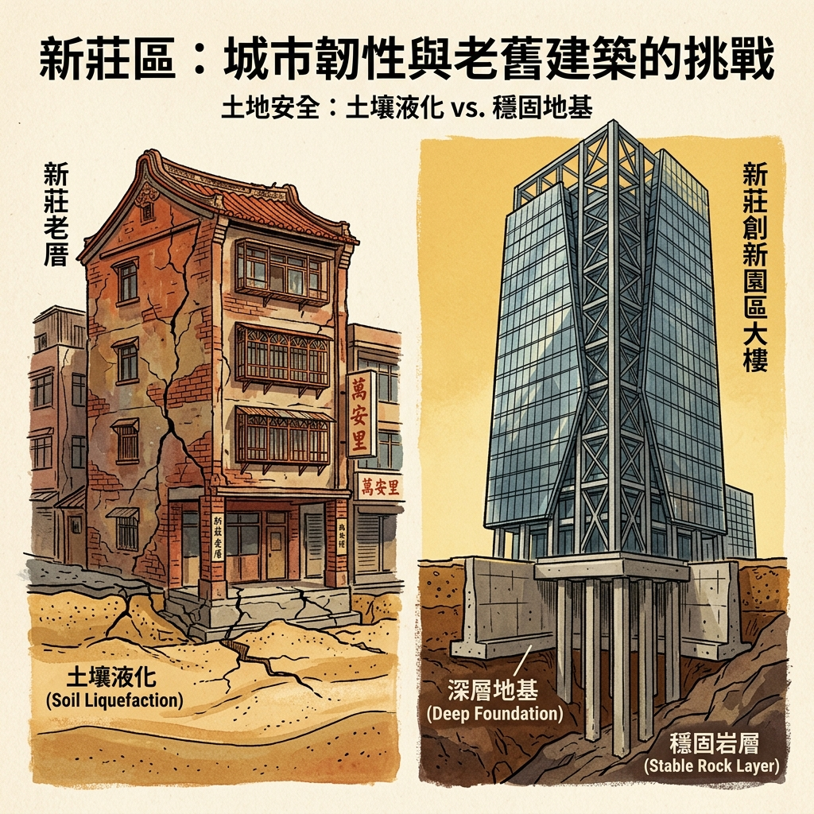

震盪新莊
無法選擇的「家」

在大漢溪底萬年飽和細砂之上，在「100% 所有權人同意」的都更與耐震補強的高牆前，我們與強震的距離到底有多遠？這是一場無情天災的考驗，還是一次社會資源、法規政策與階級差距的無情宣判？
邀請您進入新莊的地下深處，體驗這場無法迴避的抉擇。
地表之下的古老呼吸
在現代新莊喧囂的車水馬龍之下，地表深處其實隱藏著數萬年前留下來的印記。
這裡曾是古台北盆地大漢溪的河道。當潮水與河水日復一日地退去，留下了大量極其鬆軟的細細砂層。而新莊的地下水位，至今依然高得驚人，普遍距離地表僅僅只有二至六公尺。
土木地質專家指出，當「鬆軟砂層」、「高地下水」以及「足夠強度的地震」三者在某個瞬間相遇，原本堅硬的地盤就會在幾秒鐘內化為一灘液體——這就是「土壤液化」。
一邊是震動，一邊是安靜
在南新莊西盛里的老公寓一樓，經營水果行三十年的李老闆正吃力地拉開鐵門。每當大卡車經過，斑駁的柏油路面會發出劇烈的顫動，天花板上細微的泥灰便撲簌簌地落在他斑白的頭髮上。「老房子了，到底還能震多久？」他嘆著氣。
與此同時，幾公里外的新莊副都心。科技業經理 Kevin 站在全新落成的 24 樓景觀陽台，隔著厚實的雙層氣密窗與抗震鋼骨，看著同一個日出。他感覺不到卡車的震動，甚至想不起來自己也踩在同一片鬆軟的液化潛勢區上。
同樣一塊地質，因興建年代、法規防禦力與社會資源的落差，讓新舊居民默默承受著截然不同的居住風險。
無法輕忽的 6.6 強震模擬
橫亙大台北西側的「山腳斷層」一直保持著沉睡。然而科學界與防災單位從不敢掉以輕心。
國家災害防救科技中心（NCDR）曾做過一項極其嚴謹的模擬：一旦山腳斷層南段（樹林至北投）活動，引發芮氏規模 6.6 的地震，在盆地效應與高度土壤液化的加成摧毀下——
推估雙北將在一瞬間倒塌 17,034 棟建築，死傷估計高達 3,963 人，將有近 6 萬人失去家園、流離失所。
面對即將到來的考驗，你，能安然度過嗎？
請選擇你要扮演的角色
不同的角色背景，代表著在大地動搖前，你所擁有的法規武器與社會籌碼。
阿源
你今年五十六歲，在老舊住宅密集的西盛里經營水果行。房子是你大半輩子的血汗，但屋齡老舊，地基是無連續壁的淺基礎，一樓挑高形成防災上的「軟腳結構」。
Kevin
三十八歲的科技業主管。在規劃完善的副都心重劃區購置新房。建商依照最新建築法規，施作了深連續壁與筏式基礎防震工法，將地質液化風險降到最低。
事件標題讀取中...
事件故事內容...
註解內容...
決策執行回顧
決策回饋故事...
🚨 偵測到地震！正在進行模擬
系統正模擬山腳斷層南段活動引發的 **芮氏規模 6.6 強烈地震**。此時地層正在受剪力影響，液化潛勢與建築結構承重力結算中...
地盤剪力與耐震結構結算中...
結構性悲歌
── 現實震撼數據 ──
像你這樣的案例，全雙北預估有 17,034 件
你在剛才的遊戲中，是否感到深深的無力？ 如果是扮演阿源，無論你花費多少口舌，鄰居往往只關心都更後可以「分到多少坪數與補償金」，對隱形的地質與結構危機毫無警覺。
新北市政府工務局雖然推動了「弱層補強補助」新制，然而「全棟 100% 同意簽字」的法規高牆，成為一條無法跨越的生死線。只要有一戶反對，整棟樓的生命保障計畫即宣告胎死腹中。
在全台高達數萬棟的老舊公寓中，像阿源這樣渴望自救卻被制度與利益卡死的居民，占了絕大多數。天災固然無情，但法規門檻與社會共識的空缺，才是將他們推向深淵的推手。
防災行動指南：我的家安全嗎？
這不是一場只留在螢幕上的遊戲。了解現實，是自救的第一步。
新莊重點路段液化潛勢互動地圖
請直接點擊下方地圖的彩色路段或區塊，即時查看液化深度診斷：
土木工程與社會自救對策
1. 土壤液化潛勢高 = 房屋一定會倒塌嗎？
應用地質技師賴俊偉強調：不一定。土壤液化主要引發地表不均勻沉陷使房屋傾斜。新建大樓已透過樁基礎或筏式基礎避開風險。老屋若能做好基礎加固或弱層補強，安全性就能大幅提升。
2. 老舊公寓如何進行低成本自救？
土木技師賴俊安建議，老舊公寓可申請政府「耐震能力初步評估」與「弱層補強補助」。不必動輒斥資數億拆除都更，僅需針對一樓的軟腳支柱包覆鋼鈑或局部增設剪力牆，就能在強震時硬生生撐住整棟樓的生命安全。